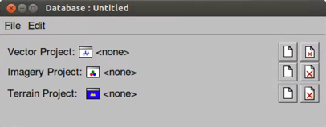
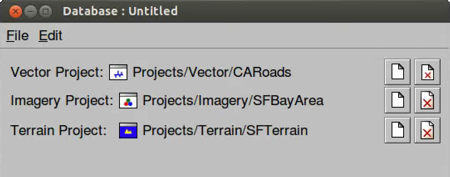

Google Earth Enterprise Documentation Home | Fusion tutorial
Defining and Building Databases
The following exercises guide you through defining and building a database, using the projects you created in the previous lesson.
Define a Database
When you define a database, you specify one or more Google Earth Enterprise Fusion projects that Google Earth Enterprise Fusion combines into a single self-contained world that is flyable in Google Earth EC. You can select up to three projects for a database--one of each type:
- Vector
- Imagery
- Terrain
Because the majority of your efforts involve defining and configuring different projects for inclusion in your database, it is relatively fast to define a database once the projects are created. You simply select the projects that comprise the database and give it a name.
To define a database:
- Select Asset Manager from the Tools menu. The Asset Manager appears.
- Click the page icon on the toolbar:
 The Database Editor appears with no projects selected.
The Database Editor appears with no projects selected.

- Click the page icon in the Vector Project row:

- Navigate to
ASSET_ROOT/Projects/Vector.Note: The selection in the Type drop-down list near the bottom of this dialog determines the type of projects that appear on the list. Vector Project is automatically selected, so only vector resources appear on the list.
- Select the CARoads project and click Open. The CA Roads project appears in the Database Editor next to Vector Project.
- Click the page icon in the Imagery Project row and select
Projects/Imagery/SFBayArea. - Click the page icon in the Terrain Project row and select
Projects/Terrain/SFTerrain.All three projects are now listed in the Database Editor window:

- Select File > Save and navigate to the
ASSET_ROOT/Databasesfolder. - Enter SFHighways as the name of your database, and click Save.
The name of the database is displayed when you select the
/ASSET_ROOT/Databasesfolder in the asset navigation tree.
Build a Database
Once the database has been defined, it is ready to be built.
Note: If you had not built the projects included in this database previously, the following process would build them in the course of building the database. As you might expect, the database build process takes much longer if it is building all of the projects in the database at once. However, since Google Earth Enterprise Fusion gives you the option to build each project as soon as you finish making modifications or when you build the database, you can determine the best work style for yourself.
To build a database:
- In the Asset Manager, select the
/ASSET_ROOT/Databasesfolder.SFHighways appears on the right with the Current Version and the Current State set to None, indicating that the database has not yet been built.
- Right-click SFHighways and select Build. The status of the database immediately changes to Queued and then to In Progress.
- Double-click the Current Version or Current State column of the SFHighways to view
the progress of the build.
The Version Properties dialog displays the most recent version of that database. You can expand the version tree to view the status of the build in real time by clicking the + signs.
When Google Earth Enterprise Fusion finishes building the database, its Current State column in the Asset Manager changes to Succeeded, and its Current Version column changes to the date and time the most recent build was started.
Close the Asset Manager by clicking the close box (X) in the top right corner, and go on to the next lesson.